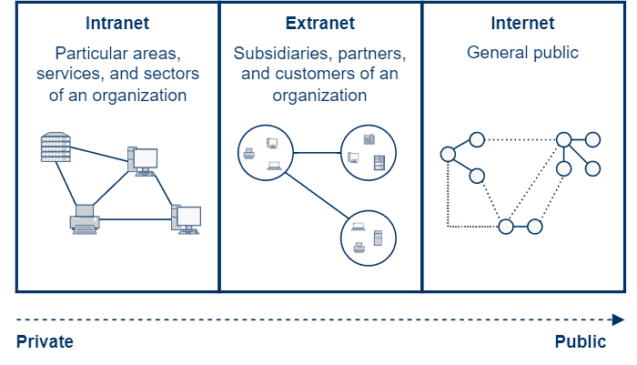

Intranet and Extranet
INTRANET
Definition: An intranet is a private network that is accessible only to an organization's members, employees, or authorized users. It is used to share information, resources, and communication within the organization.
How it works: An intranet typically uses web technologies such as HTTP and web browsers to provide access to internal resources. It may include features like file sharing, collaboration tools, and internal communication platforms.
Examples: Examples of intranet applications include company portals, internal communication platforms like Microsoft Teams or Slack, and document management systems used within organizations.
EXTRANET
Definition: An extranet is a private network that allows controlled access to external users, such as business partners, suppliers, or customers. It is used to facilitate communication and collaboration between an organization and its external stakeholders.
How it works: An extranet is typically built on top of an intranet and uses secure protocols to provide access to specific resources for external users. It may include features like secure file sharing, collaboration tools, and communication platforms that allow external users to interact with the organization's internal systems.
Examples: Examples of extranet applications include supplier portals, customer support portals, and partner collaboration platforms that allow external users to access specific resources and communicate with the organization.
SIMILARITIES
1. Both intranets and extranets are private networks that use web technologies to facilitate communication and collaboration.
2. Both intranets and extranets can include features such as file sharing, collaboration tools, and communication platforms to enhance productivity and information sharing.
DIFFERENCES
1. An intranet is accessible only to an organization's members, while an extranet allows controlled access to external users.
2. An intranet is primarily used for internal communication and resource sharing, while an extranet is used to facilitate communication and collaboration between an organization and its external stakeholders.
